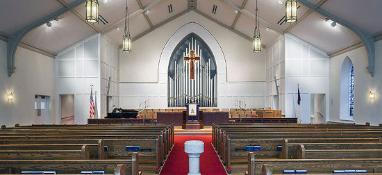

Doylestown Presbyterian Church Renovations



Project summary
Construction of new additions and extensive renovations to Doylestown Presbyterian Church’s educational building and their historic sanctuary.
- Hired during the Design Development/Construction Documents phase.
- Worked hand-in-hand with the church’s pastoral, administrative staff, and building committee.
- Planned, managed, supervised, and evaluated the 6 phase project from a scope of work, staging, and phasing point-of-view.
- Handled difficult bidding stage and development of the Guaranteed Maximum Price.
- Saved the church over $200,000 by recommending preferred subcontractors on certain key trades on the project.
- Attended every bi-weekly construction phase job meeting along with numerous other project coordination and change order discussion meetings.
- Carefully reviewed and critiqued over 100 change orders for completeness and fair pricing.
- Completed the complex multiple phase project within one week of original contract completion date.
Budget
$7.72M
Timeframe
April, 2010 - December, 2011
Location
Doylestown, PA